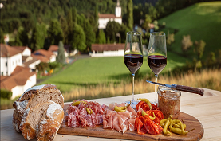
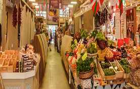
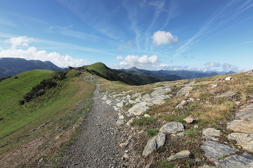
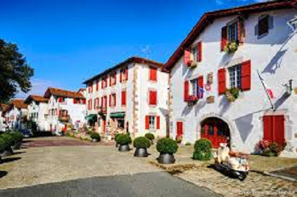
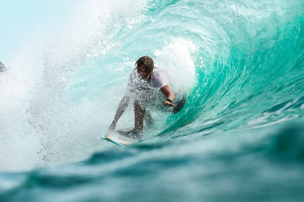
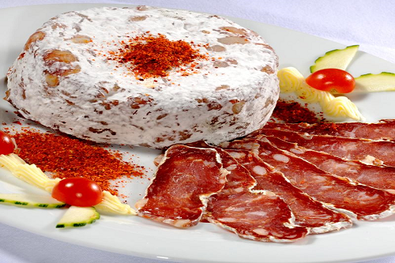
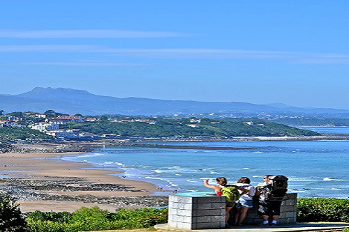

Découvrez le Pays Basque
Vous avez envie de faire du surf au Pays Basque ?
C’est un sport qui vous permet de
profiter des plaisirs de la mer et des bienfaits de l’océan, avec en toile de fond la magnifique
côte basque.
Voilà une activité sportive complète, qui allie équilibre et souplesse. C’est une danse avec les
vagues !

En Europe, c’est à Biarritz que cette
culture débarque, à la fin des années 50. Et c’est un raz-de-marée qui submerge la ville et change
son image.
Mais ce n’est pas qu’un sport. La culture du surf est un état d’esprit, une
rencontre avec l’océan…
Vous avez envie de gastronomie au pays Basque ?

La gastronomie du Pays Basque tient sa réputation des produits du terroir, issus bien souvent de petites exploitations familiales, terres d’élevage, respectant traditions et savoir-faire. Fromages, piments, vins, jambons, gâteaux… mais aussi ressources de l’océan, inspirent la variété de la cuisine basque, une cuisine de caractère. Il existe au Pays basque depuis le milieu du XIXème siècle des sociétés gastronomiques, sorte de clubs détenus par des hommes qui se mettent en cuisine, et perpétuent, autour des fourneaux, les recettes ancestrales. Ces sociétés jouent un rôle important dans la transmission du patrimoine culturel et culinaire basque.

Vous avez envie de visiter l'arrière pays ?

Non loin de Biarritz, n'hésitez pas à visiter les nombreux villages aux maisons à colombage rouges et vertes. Nombre d'entre eux sont d'ailleurs classés « plus beaux villages de France » comme Sare, Ainhoa, La Bastide Clairence et Saint-Jean-Pied-de-Port… Mais nos préférés restent Sare et Espelette.
On vous a fait rêver ? Allez, c’est parti !




C’est un sport qui vous permet de
profiter des plaisirs de la mer et des bienfaits de l’océan, avec en toile de fond la magnifique
côte basque.
Voilà une activité sportive complète, qui allie équilibre et souplesse. C’est une danse avec les
vagues !
En Europe, c’est à Biarritz que cette
culture débarque, à la fin des années 50. Et c’est un raz-de-marée qui submerge la ville et change
son image.
Mais ce n’est pas qu’un sport. La culture du surf est un état d’esprit, une
rencontre avec l’océan…
La gastronomie du Pays Basque tient sa réputation des produits du terroir, issus bien souvent de petites exploitations familiales, terres d’élevage, respectant traditions et savoir-faire. Fromages, piments, vins, jambons, gâteaux… mais aussi ressources de l’océan, inspirent la variété de la cuisine basque, une cuisine de caractère. Il existe au Pays basque depuis le milieu du XIXème siècle des sociétés gastronomiques, sorte de clubs détenus par des hommes qui se mettent en cuisine, et perpétuent, autour des fourneaux, les recettes ancestrales. Ces sociétés jouent un rôle important dans la transmission du patrimoine culturel et culinaire basque.
Non loin de Biarritz, n'hésitez pas à visiter les nombreux villages aux maisons à colombage rouges et vertes. Nombre d'entre eux sont d'ailleurs classés « plus beaux villages de France » comme Sare, Ainhoa, La Bastide Clairence et Saint-Jean-Pied-de-Port… Mais nos préférés restent Sare et Espelette.
On vous a fait rêver ? Allez, c’est parti !